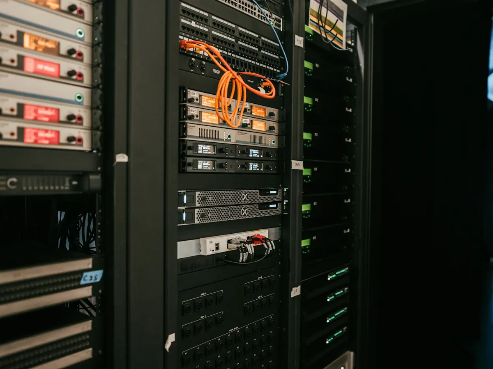
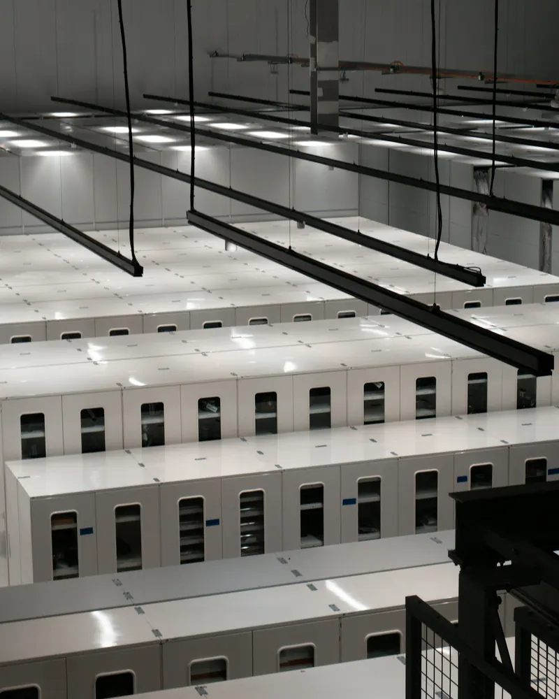

Le serveur tombe en panne
Disque dur ou serveur hors service : vos fichiers sont restaurés sur un nouveau matériel.
Fichiers clients, comptabilité, e-mails, logiciels métier : sans eux, votre entreprise s'arrête. Nous mettons en place des sauvegardes automatiques, externalisées et testées, pour que vous puissiez repartir vite, quoi qu'il arrive.
Ces situations arrivent chaque jour à des entreprises de toutes tailles. Avec une bonne sauvegarde, ce ne sont plus que de mauvais moments.
Disque dur ou serveur hors service : vos fichiers sont restaurés sur un nouveau matériel.
Vos données sont récupérées depuis une copie isolée, sans payer de rançon.
La copie externalisée, hors de vos locaux, reste intacte.
Le bon fichier, dans la bonne version, retrouvé en quelques minutes.
Ses e-mails et documents restent conservés et accessibles à l'entreprise.
Retour en arrière rapide sur l'état de la veille.

Nous identifions avec vous ce qui est vital pour votre activité, puis nous le protégeons automatiquement, chaque jour, sans que vous ayez à y penser.
Une sauvegarde utile est automatique, externalisée et testée.

Ce qui doit être sauvegardé, à quelle fréquence, et ce qu'il faut pouvoir rétablir en premier.
Copies quotidiennes locales et externalisées, chiffrées, sans action de votre part.
Chaque sauvegarde est contrôlée, et nous testons régulièrement la restauration.
Une procédure écrite pour redémarrer vite en cas d'incident, connue de tous.
Microsoft assure la disponibilité du service, mais la corbeille ne conserve les éléments supprimés que pendant une durée limitée. Pour se protéger d'une suppression accidentelle ou malveillante, une sauvegarde séparée de vos e-mails et fichiers est recommandée.
C'est un début, mais il reste dans vos locaux : un vol, un incendie ou un rançongiciel peuvent l'atteindre en même temps que vos ordinateurs. Nous ajoutons toujours une copie externalisée.
Dans des centres de données sécurisés, avec un chiffrement de vos données. Nous privilégions un hébergement en Europe, en cohérence avec le RGPD.
Nous surveillons chaque sauvegarde et sommes alertés en cas d'échec. Surtout, nous testons régulièrement la restauration : une sauvegarde n'a de valeur que si l'on sait la restaurer.
Cela dépend de ce qui est touché et de la solution retenue. Nous définissons avec vous, dès la mise en place, les données et logiciels à rétablir en priorité, et dans quel délai.
Retrouvez l'ensemble de notre offre sur la page infogérance et maintenance pour les PME.

Nous vérifions votre situation actuelle et vous proposons un plan adapté.